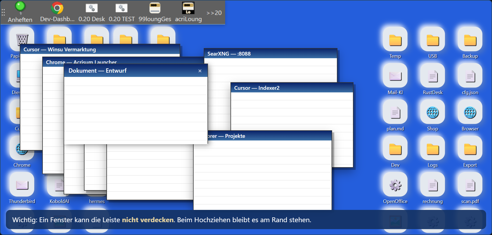
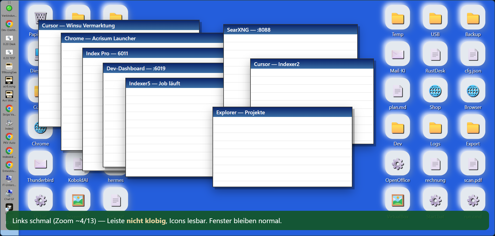
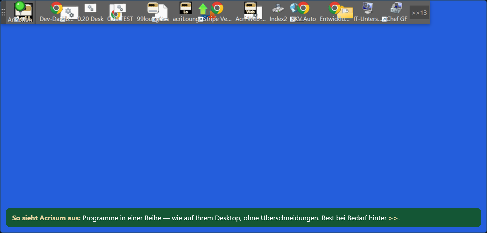
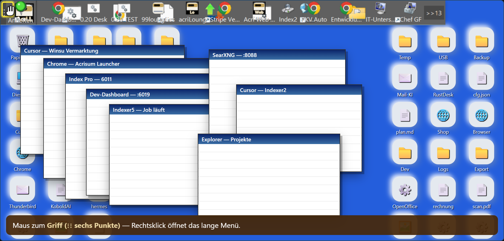
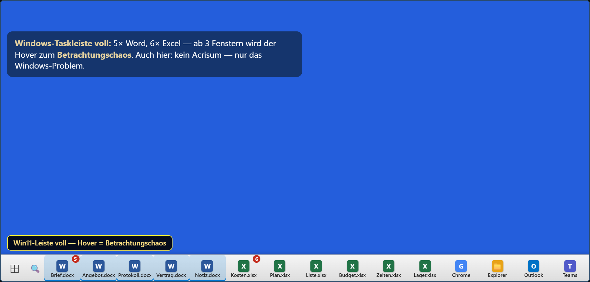
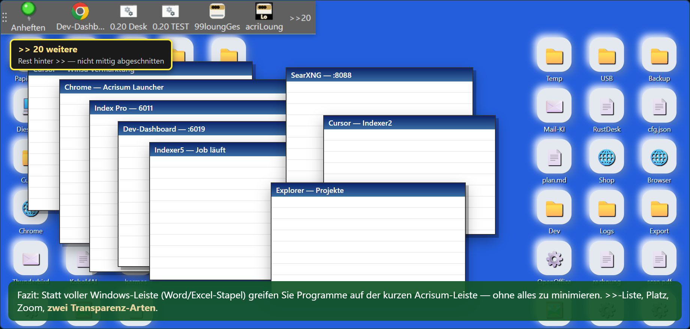
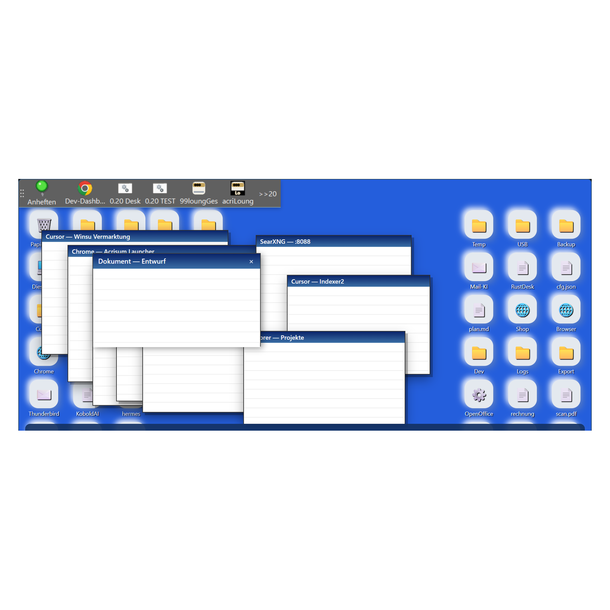

Stand: aus winsu-vermarktung durchsucht. ★ = für Google Merchant empfohlen (Story + Auflösung).
Quelle: shop/einblick-demo.html · Skript: _screenshot_einblick_merchant.py






../anheften-fenster-voll.png (launcher2-hilfe) — echtes Anheften-Fenster, 931×946 ★ — aber Dev-Leiste oben../vergleich-acrisum-rocketdock-nexus.png — VORTEIL Grafik 1400×900 ★ für Story „Platz reserviert“../../marketing/MAIL-TESTER-leiste-6-bildschirm.png — saubere Büro-Leiste (Explorer, Notepad …) ★ ohne Dev — aber nur 456×82../../marketing/MAIL-TESTER-leiste-echt-voll.png — Vollbild 1920×1200 — Dev-Desktop, nicht für Kunden../overflow-2.png — Überlauf-Liste „Leiste verlängern“../acrisum-launcher.png — Shop-Hero 647×99 (zu klein für Merchant allein)../../launcher2-hilfe/bilder/menue-komplett.png — Kontextmenü (Farben, Platz reservieren)../../marketing/mitbewerber-bilder/ — ObjectDock Productivity etc. (Vorbild, nicht Acrisum)
acrisum-launcher-google.png — 1500×1500, aus Einblick Frame „Fenster stoppt“.